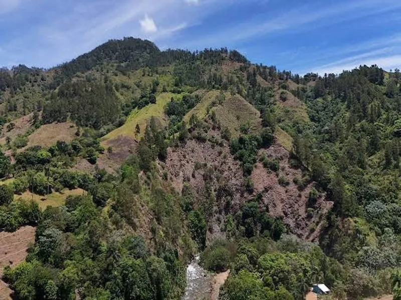

Punta Cana
Punta Cana is famous for its 32 kilometers of white sand beaches and turquoise waters. It is home to world-class resorts, golf courses, and water sports like snorkeling and catamaran tours.
Punta Cana is famous for its 32 kilometers of white sand beaches and turquoise waters. It is home to world-class resorts, golf courses, and water sports like snorkeling and catamaran tours.

Between January and March, Samaná Bay becomes a nursery for humpback whales migrating from the North Atlantic. The peninsula also boasts Playa Rincón, considered one of the most beautiful beaches in the Caribbean.

A UNESCO World Heritage Site, the Colonial Zone was founded in 1498 and is the oldest permanent European settlement in the Americas. Walk cobblestone streets past the Catedral Primada and Alcázar de Colón.

Nestled in the Cordillera Central mountain range, Jarabacoa offers cool weather, waterfalls, whitewater rafting, and hiking to Pico Duarte, the highest peak in the Caribbean.